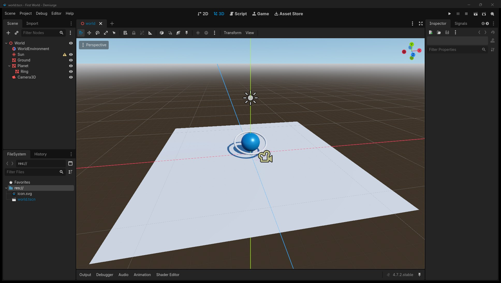

Your first world
Start Demiurge, press Create, name the project and pick a folder. Add a Node3D, give it a MeshInstance3D, a Camera3D and a light, and press F5 to run it. Godot's projects, tutorials and add-ons work in Demiurge as they are.